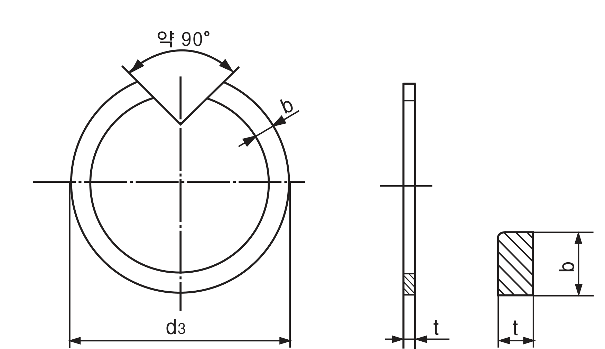
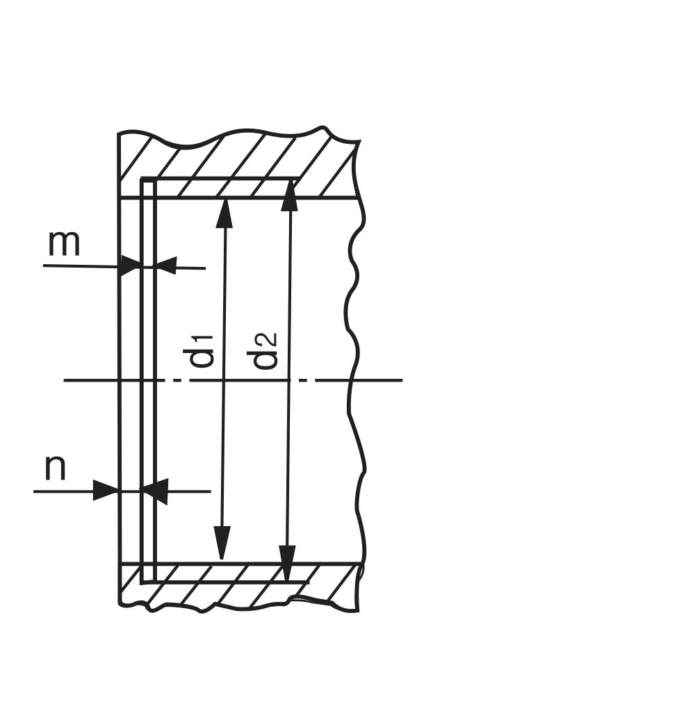

Retaining Ring · Concentric Type
구멍(홀) 내부에 장착되는 동심(同心) 구조의 C형 멈춤링입니다. 일반 C형(R형)과 달리 링 자체가 완전한 원형(동심원) 구조로 가공되어, 홈에 장착된 뒤에도 중심이 어긋나지 않고 균일하게 하중을 분산합니다. 규격 기호는 WR로 표기하며, KS B 1338(C형 동심 멈춤링) 계열 규격을 따릅니다.
KS B 1338 계열 규격 도면

↑ 완전 동심 이중원 · 절개부 약 90°
d3=외경 · 단면 형상(t=두께, b=폭)

↑ 적용하는 구멍 (참고)
d1=구멍지름 · d2=홈지름 · m=홈폭 · n=여유
| 호칭 번호 (Size No.) | 외경 d3 (mm) | 두께 t (mm) | 폭 b (mm) | 모서리 r (mm) | 구멍지름 d1 (참고) | 홈지름 d2 (참고) | 홈폭 m (참고) | 여유 n (참고) |
|---|---|---|---|---|---|---|---|---|
| WR-20 | 21.3 | 1 | 2 | 0.3 | 20 | 21 | 1.15 | 1.5 |
| WR-22 | 23.3 | 1 | 2 | 0.3 | 22 | 23 | 1.15 | 1.5 |
| WR-24 | 25.7 | 1.2 | 2 | 0.3 | 24 | 25.2 | 1.35 | 1.5 |
| WR-25 | 26.7 | 1.2 | 2 | 0.3 | 25 | 26.2 | 1.35 | 1.5 |
| WR-26 | 27.7 | 1.2 | 2 | 0.3 | 26 | 27.2 | 1.35 | 1.5 |
| WR-28 | 29.5 | 1.2 | 2 | 0.3 | 28 | 29.4 | 1.35 | 1.5 |
| WR-30 | 31.9 | 1.2 | 2 | 0.3 | 30 | 31.4 | 1.35 | 1.5 |
| WR-32 | 34.2 | 1.2 | 2 | 0.3 | 32 | 33.7 | 1.35 | 1.5 |
| WR-35 | 37.5 | 1.6 | 2.8 | 0.5 | 35 | 37 | 1.75 | 2 |
| WR-37 | 39.5 | 1.6 | 2.8 | 0.5 | 37 | 39 | 1.75 | 2 |
| WR-40 | 43.1 | 1.75 | 3.5 | 0.7 | 40 | 42.5 | 1.9 | 2 |
| WR-42 | 45.1 | 1.75 | 3.5 | 0.7 | 42 | 44.5 | 1.9 | 2 |
| WR-45 | 48.1 | 1.75 | 3.5 | 0.7 | 45 | 47.5 | 1.9 | 2 |
| WR-47 | 50.1 | 1.75 | 3.5 | 0.7 | 47 | 49.5 | 1.9 | 2 |
| WR-50 | 53.6 | 2 | 4 | 0.7 | 50 | 53 | 2.2 | 2 |
| WR-52 | 55.8 | 2 | 4 | 0.7 | 52 | 55 | 2.2 | 2 |
| WR-53 | 58.8 | 2 | 4 | 0.7 | 53 | 58 | 2.2 | 2 |
| WR-56 | 59.8 | 2 | 4 | 0.7 | 56 | 59 | 2.2 | 2 |
| WR-62 | 65.8 | 2 | 4 | 0.7 | 62 | 65 | 2.2 | 2 |
| WR-63 | 66.8 | 2 | 4 | 0.7 | 63 | 66 | 2.2 | 2 |
| WR-68 | 72.1 | 2.5 | 5 | 0.7 | 68 | 71 | 2.7 | 2.5 |
| WR-72 | 76.1 | 2.5 | 5 | 0.7 | 72 | 75 | 2.7 | 2.5 |
| WR-75 | 79.1 | 2.5 | 5 | 0.7 | 75 | 78 | 2.7 | 2.5 |
| WR-80 | 85 | 3 | 6 | 0.7 | 80 | 83.5 | 3.2 | 3 |
| WR-85 | 90 | 3 | 6 | 0.7 | 85 | 88.5 | 3.2 | 3 |
| WR-90 | 95 | 3 | 6 | 0.7 | 90 | 93.5 | 3.2 | 3 |
| WR-95 | 100 | 3 | 6 | 0.7 | 95 | 98.5 | 3.2 | 3 |
| WR-100 | 105 | 3 | 6 | 0.7 | 100 | 103.5 | 3.2 | 3 |
| WR-105 | 111.2 | 4 | 8 | 1.2 | 105 | 109 | 4.2 | 4 |
| WR-110 | 116.2 | 4 | 8 | 1.2 | 110 | 114 | 4.2 | 4 |
| WR-112 | 118.2 | 4 | 8 | 1.2 | 112 | 116 | 4.2 | 4 |
| WR-115 | 121.2 | 4 | 8 | 1.2 | 115 | 119 | 4.2 | 4 |
| WR-120 | 126.3 | 4 | 8 | 1.2 | 120 | 124 | 4.2 | 4 |
| WR-125 | 131.5 | 4 | 8 | 1.2 | 125 | 129 | 4.2 | 4 |
| WR-130 | 136.5 | 4 | 8 | 1.2 | 130 | 134 | 4.2 | 4 |
| WR-140 | 146.5 | 4 | 10 | 1.2 | 140 | 144 | 4.2 | 4 |
| WR-145 | 151.5 | 4 | 10 | 1.2 | 145 | 149 | 4.2 | 4 |
| WR-150 | 157.5 | 4 | 10 | 1.2 | 150 | 155 | 4.2 | 4 |
| WR-160 | 167.7 | 4 | 10 | 1.2 | 160 | 165 | 4.2 | 4 |
| WR-165 | 173.2 | 4 | 10 | 1.2 | 165 | 170 | 4.2 | 4 |
| WR-170 | 178.2 | 4 | 10 | 1.2 | 170 | 175 | 4.2 | 4 |
| WR-180 | 188.2 | 4 | 10 | 1.2 | 180 | 185 | 4.2 | 4 |
| WR-190 | 198.2 | 4 | 10 | 1.2 | 190 | 195 | 4.2 | 4 |
| WR-200 | 208.2 | 4 | 10 | 1.2 | 200 | 205 | 4.2 | 4 |
비고
두께 t=1.6mm는 당분간 1.5mm로 대체할 수 있으며, 이 경우 m은 1.65mm입니다. "적용하는 축(참고)" 열의 d1·d2·m·n은 권장 치수이며, 멈춤링 절단 끝 모양은 도면과 달라도 관계없습니다.
※ 이전 버전은 이 제품의 제조사 정식 규격 PDF를 찾지 못해 보내주신 사진을 1차 자료로 작성했고, 두께(t) 구간과 홈지름(d2) 허용공차(ISO 286-1 H11 추정치)를 모두 추정값으로 남겨뒀습니다. 이번에 R형·S형과 같은 방식으로 당사 정식 규격표 원본 PDF를 600dpi로 직접 렌더링해서 원본 표 그대로 다시 작성했습니다 — 외경(d3)·두께(t)뿐 아니라 이전에는 없던 폭(b)·모서리 라운드(r) 열, 그리고 "적용하는 구멍" 참고 치수(d1·d2·m·n)까지 원본에 있는 그대로 전부 추가했습니다. 이 원본에는 어떤 열에도 허용공차(허용차) 표기가 없어 — 기존에 있던 "d2 허용공차(H11, ISO 286-1 계산값)"는 실측이 아닌 추정값이었으므로 이번에 삭제했습니다. 정밀 가공·발주 전에는 반드시 정식 KS B 1338 규격서 원본 또는 제조사 카탈로그로 최종 확인하시기 바랍니다.